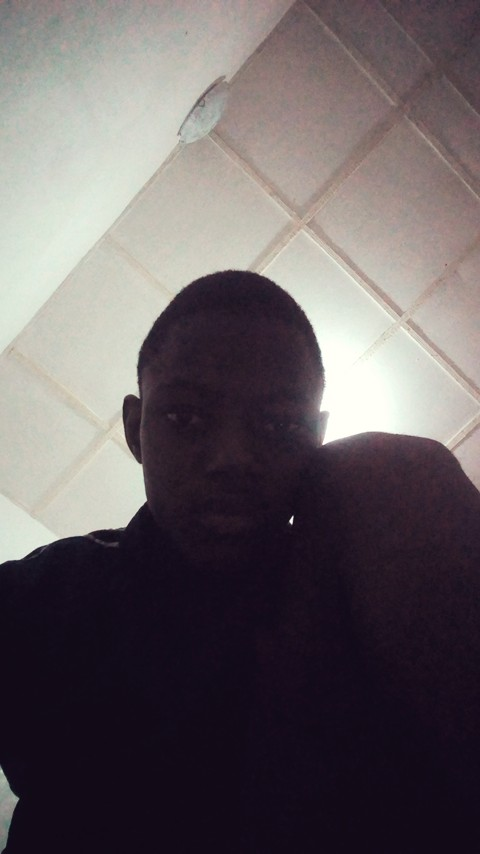

Let`s have some pictures sneak peek to my years in the university
The new school session started late around November/ December 2017,
and I gained admission early January 2018.

January 29th, 2018. One of the first picture in Unilorin
March 30th, 2018. Matriculation Ceremony picture even though we went
late for it
2019. Me and my friends in 2019 going for a friend's birthday
Engineering third semester in 2020 which is meant for Surveying
During SWEP and Coronavirus Period in 2020, a lot happened here but
Alhamdulillah!
2021. Couldn't find any picture relating to school here. This was
the period of 300 level second semester and the session of 400 level
2022. Period of my IT days at IITA in Ibadan, there is no picture of
that too
Welcome to my Final Year in the University. 2023
June 1st, 2023. Civil Engineering Dinner and Award Night
Sign Out Picture in 2023The Convocation Pictures